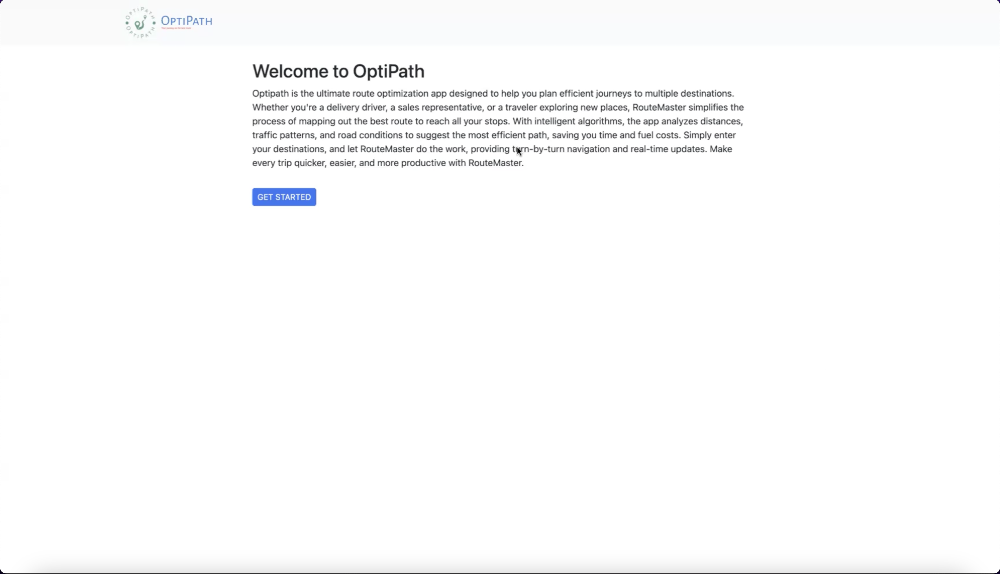
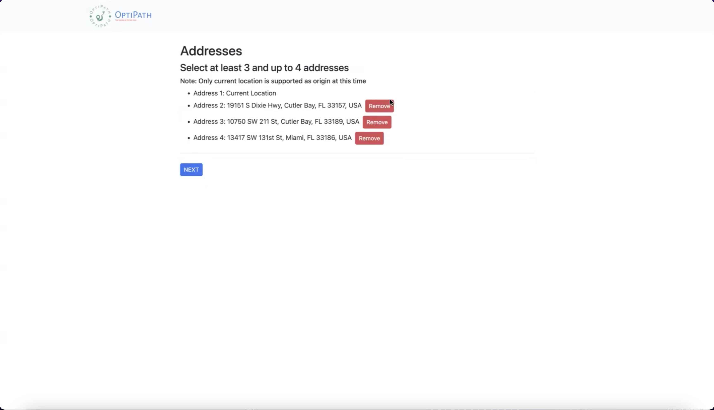
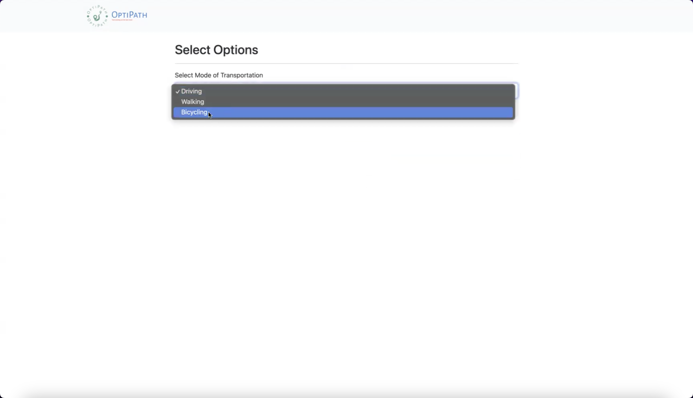
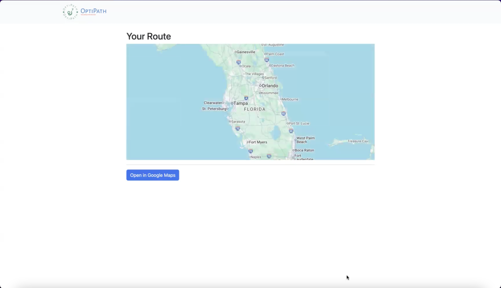
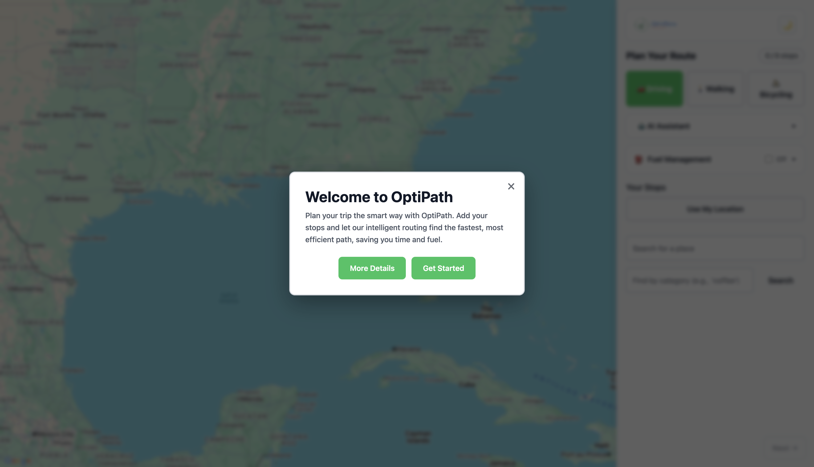

Senior Project · 3-Person Team
OptiPath
A full-stack web application that helps users plan efficient multi-stop routes using real-time traffic, user constraints, and AI-assisted itinerary generation.
View Live SiteFull-Stack Product
Built a route planning experience with real-time routing, mapping, and API integrations.
AI-Assisted Planning
Integrated AI itinerary parsing to turn natural language into structured route input.
Constraint-Based UX
Designed flows for start/end points, lock logic, fuel planning, and multi-stop control.
Overview
What the project does
OptiPath is a route optimization and trip-planning tool designed for users who need to organize multiple destinations into the most efficient path. Rather than only solving for the mathematically shortest order of stops, the product was built around how people actually plan trips in real life.
Users often have practical constraints: they may need to start from a fixed location, end at a specific destination, stop somewhere before another place, or plan around timing and fuel needs. OptiPath brings those real-world decisions into the route-planning experience.
Problem
Why existing tools were not enough
Traditional navigation products like Google Maps are strong at generating directions, but they are much less flexible for complex, real-world route planning scenarios. When multiple stops, ordering dependencies, and personalized route preferences are involved, the planning experience becomes repetitive and frustrating.
- Users manually reorder stops repeatedly
- Cannot enforce dependencies such as “go here before there”
- Struggle to estimate fuel needs or timing
- Cannot easily convert natural language into structured route input
The gap was not optimization alone — it was giving users a way to keep a route efficient while still respecting start points, end points, must-happen-before constraints, and real-world travel decisions.
Solution
Designing a smarter planning experience
OptiPath transforms route planning from a static list of destinations into an interactive decision-making tool. The app combines algorithmic route optimization with user control, giving people the ability to shape the trip instead of accepting a route blindly.
- Optimizes multi-stop routes
- Allows users to define start and end points
- Supports ordering constraints between stops
- Uses real-time traffic and distance data
- Parses natural language into structured itinerary input
- Optionally inserts fuel stops based on vehicle data
User Story
Designing from a real user scenario
One of the most important product insights came from thinking through a real use case, not just the algorithm.
A college student on a Friday night needs to stop at Target for a gift, Publix for a cake, get gas, pick up a friend, and then go to a birthday party. A purely time-based optimizer might reorder those stops in a way that is technically fast but practically useless.
That insight pushed the product beyond “best route calculation” and into a more user-centered planning tool. Instead of assuming the algorithm always knows best, the interface needed to support intent, dependencies, and fixed endpoints.
- Enter multiple destinations
- Set a starting point and ending point
- Specify constraints such as “Stop A before Stop B”
- Quickly generate the most efficient usable route
- Understand total time, distance, and fuel needs
My Role
What I contributed
On this 3-person team, I worked across both product thinking and implementation. My work focused on UX design, front-end development, and helping connect the interface with route logic so the final experience reflected real user needs.
UX Design
Restructured the interface around the map and clarified the route-building workflow.
Front-End Development
Implemented interaction logic for start/end points, constraints, UI states, and route controls.
Feature Design
Helped define and shape lock-order logic, route control patterns, and fuel-related interaction design.
Team Integration
Worked across front-end and back-end decisions to align the user flow with optimization behavior.
Design & UX Decisions
How the experience evolved
A major part of the project was improving usability. Early versions of the interface surfaced too much information at once and did not make the route itself feel central enough. I approached the redesign by reducing friction, increasing clarity, and giving users more direct control.
Step-Based Flow
Moved from a more open-ended input experience toward a clearer select → confirm → optimize flow.
Sidebar Layout
Organized controls in a collapsible sidebar so the map remained visible and visually central.
Start / End Controls
Added explicit START and END badges and controls to clarify route direction and structure.
Drag & Drop Stops
Implemented draggable stop ordering to improve user control and support manual adjustment.
Lock / Constraint System
Introduced a lock-order feature so users could define dependencies and prevent invalid optimization outputs.
AI Assistant
Added natural language itinerary parsing to reduce friction and make route setup more accessible.
Fuel Tracking
Included optional fuel planning to estimate range and automatically insert gas stops when needed.
Visual Feedback
Added travel times, distance summaries, badges, and loading states to make optimization results easier to understand.
Before




After


Technical Implementation
How it was built
Frontend
Vue 3, TypeScript, Vite, component-based architecture, interactive state-driven UI.
Backend
Node.js, Express, and Gemini API integration for itinerary parsing and AI-assisted input.
APIs
Google Maps JavaScript API, Places API, Distance Matrix API, and directions-based routing services.
Implemented Features
Constraint logic, AI parsing, fuel estimation, route summaries, travel timing, and map-based visualization.
On the technical side, I contributed to front-end interaction logic and feature implementation, including parts of the fueling feature and the UI required to support constrained route planning. This meant thinking through both interface behavior and the logic needed to keep route state, map state, and optimization outputs aligned.
- How users define and reorder stops
- How start and end locations are fixed
- How must-come-before relationships are represented in the UI
- How those rules are passed into route optimization logic
- How optimization results are visualized clearly on the map and in the stop list
Challenges
What made the project difficult
Route Optimization Complexity
Balancing startIndex, end constraints, and real-world travel time within an optimization flow.
Syncing UI + Algorithm
Keeping the visible order of stops, optimized results, and route state consistent after user edits.
API Integration
Handling Google Maps limits, API key restrictions, and production differences between localhost and deployment.
Deployment
Separating frontend and backend hosting, environment variables, and cross-origin configuration.
Results
Outcome & impact
The final product supports more realistic route planning scenarios than a simple stop optimizer. By combining route efficiency with user-defined structure, OptiPath became a stronger and more practical planning tool.
- Supports complex multi-stop route planning scenarios
- Reduces manual route adjustments
- Improves usability through clearer interaction patterns
- Adds accessibility through AI-assisted route input
- Works across desktop and mobile layouts
This project strengthened my ability to work between UX and engineering: identifying product gaps, designing clearer flows, implementing interaction logic, and integrating external systems into a user-centered product.
Future Improvements
What I would build next
- Improve mobile interaction patterns even further
- Add save and share route functionality
- Replace deprecated Google Maps services with newer APIs
- Explore stronger optimization models for more advanced routing scenarios
- Add user accounts and saved planning preferences
Takeaways
What this project taught me
OptiPath reinforced how product design and engineering are strongest when they inform each other. The best solution was not simply a faster algorithm — it was a better user experience built around real-world constraints.
- Designing user-centered interfaces for complex workflows
- Building full-stack applications across front-end and back-end layers
- Integrating external APIs into a cohesive product experience
- Debugging real deployment issues beyond local development
- Balancing technical logic with usability and clarity